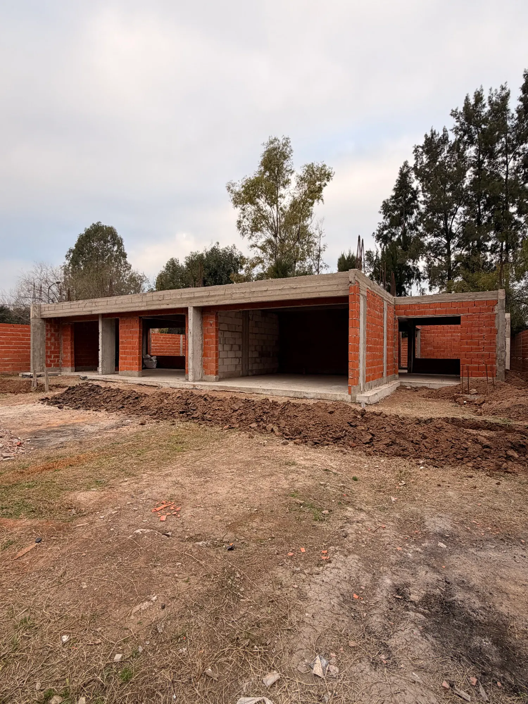
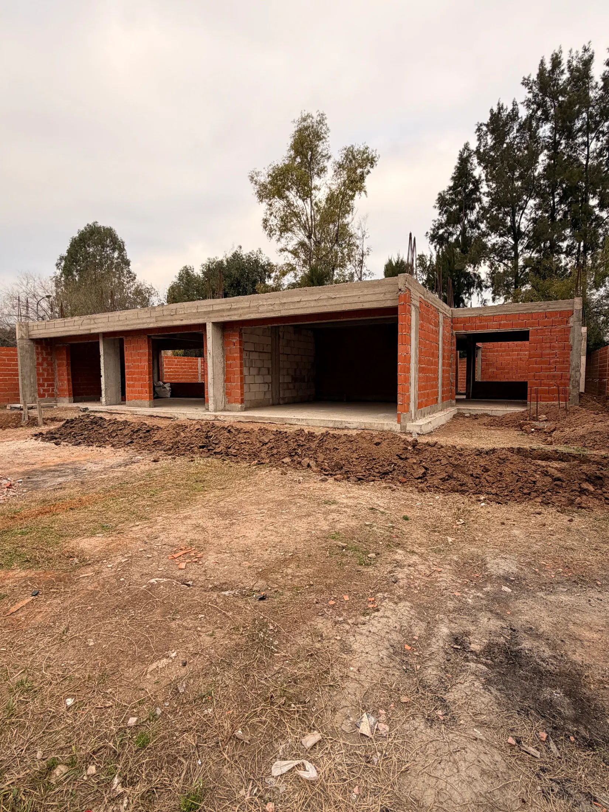
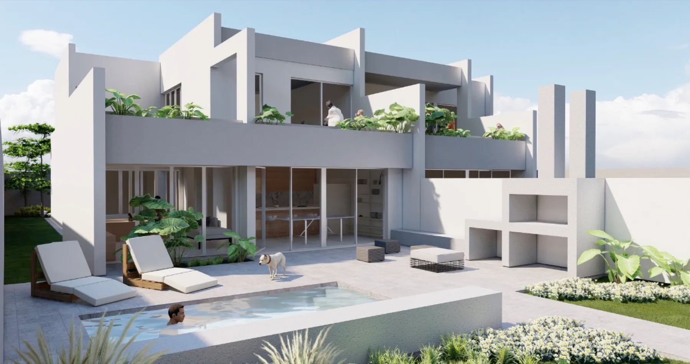
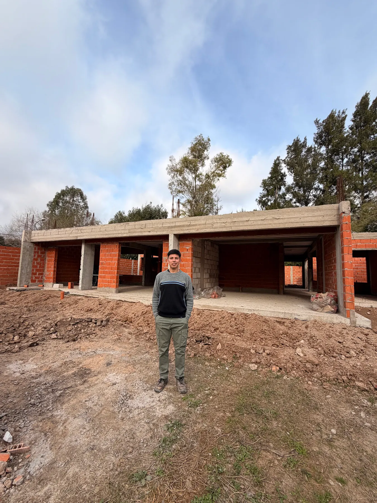

01
Gestión y regularización
Planos municipales
Primero diagnosticamos. Después definimos qué trámite y documentación corresponden según el inmueble y el municipio.
- Relevamiento y antecedentes
- Análisis normativo
- Expediente y seguimiento

Arquitectura · Planos municipales · Zona Norte
Ordenamos lo complejo para que cada decisión —de un plano municipal a una vivienda— tenga fundamento, dirección y un próximo paso claro.
La arquitectura como una herramienta para decidir mejor.
Mat. profesional T-54041
Benavidez · Tigre
Qué hacemos
Dos formas de ayudarte a avanzar con menos incertidumbre.
Gestión y regularización
Primero diagnosticamos. Después definimos qué trámite y documentación corresponden según el inmueble y el municipio.
Diseño y documentación
Convertimos necesidades, condicionantes del sitio y recursos disponibles en una propuesta definida y construible.
Cuándo consultar
No hace falta conocer el nombre del trámite. Con una descripción honesta de la situación podemos orientar el primer paso.
Lo construido no coincide con los planos disponibles.
La documentación condiciona una operación o escritura.
Necesitás verificar indicadores antes de construir.
La obra terminó y falta cerrar el expediente.
Hay que ordenar una respuesta técnica y documental.
Revisamos antecedentes y te ayudamos a ordenar la situación.
Proyecto seleccionado
Casa Marino · Benavidez, Tigre
Proyecto, documentación técnica, cómputos y seguimiento. Una misma lógica desde las primeras decisiones hasta la obra.


Deslizá para comparar
Cómo trabajamos
Ubicación, objetivo y estado conocido.
Medimos y reunimos los antecedentes.
Contrastamos situación real y normativa.
Producimos las piezas del alcance acordado.
Organizamos el ingreso y respondemos observaciones incluidas.

Conocé a Grafo
Grafo está dirigido por Facundo Ojeda, Maestro Mayor de Obras con matrícula profesional T-54041. El trabajo combina proyecto, documentación y gestión con una idea simple: explicar con claridad qué se puede hacer, qué hace falta y cuál es el camino razonable.
Armá tu consulta
Cuatro pasos cortos para llegar a la conversación con la información que realmente importa.